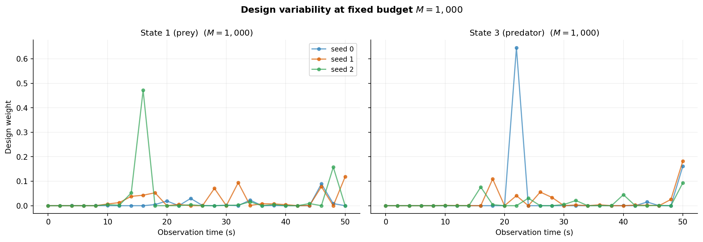
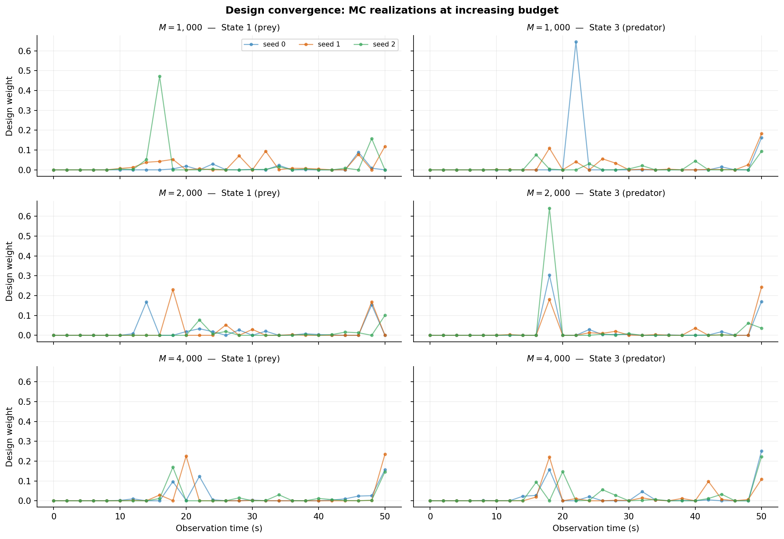

import math
import numpy as np
import matplotlib.pyplot as plt
from pyapprox.util.backends.numpy import NumpyBkd
from pyapprox.expdesign.benchmarks import LotkaVolterraOEDBenchmark
from pyapprox.expdesign.data import OEDDataGenerator
from pyapprox.expdesign import (
GaussianOEDInnerLoopLikelihood,
create_kl_oed_objective_from_data,
RelaxedKLOEDSolver,
RelaxedOEDConfig,
)
np.random.seed(1)
bkd = NumpyBkd()
benchmark = LotkaVolterraOEDBenchmark(bkd, final_time=50.0, deltat=2.0, stepper="heun")
obs_model = benchmark.observation_model()
prior = benchmark.prior()
nparams = prior.nvars()
nobs = obs_model.nqoi()
noise_std = 0.1
noise_variances = bkd.full((nobs,), noise_std**2)
noise_cov_diag = bkd.full((nobs,), noise_std**2)
data_gen = OEDDataGenerator(bkd)
joint_var = data_gen.joint_prior_noise_variable(prior, noise_cov_diag)
obs_times = bkd.to_numpy(benchmark.observation_times())Bayesian OED: Design Stability and Convergence
PyApprox Tutorial Library
Demonstrating that OED designs depend on Monte Carlo realizations at fixed budget, and that they stabilize as the budget grows.
TipDownload Notebook
Learning Objectives
After completing this tutorial, you will be able to:
- Explain why optimal designs vary between independent MC runs at a fixed budget
- Demonstrate the variability by solving the same OED problem with different random seeds
- Confirm that designs stabilize as the outer-loop budget \(M\) increases
- Identify when a design is trustworthy enough to act on
Prerequisites
Complete Bayesian OED in Practice before this tutorial. That tutorial solves a nonlinear OED problem once; here we examine how the solution depends on the Monte Carlo randomness used to build the objective.
Why Do Designs Vary?
The EIG objective is an expectation estimated with a finite Monte Carlo sum. Every independent set of outer/inner draws produces a slightly different objective landscape, and therefore a slightly different optimal design.
This is not a bug — it is the statistical reality of working with Monte Carlo estimates. The key questions are:
- At a fixed budget, how much do designs scatter across independent runs?
- As the budget grows, does the scatter shrink and the design converge?
A design that changes substantially between independent runs cannot be trusted. Stability across multiple seeds is a necessary condition for a reliable OED solution.
Setup
We reuse the Lotka-Volterra predator-prey benchmark from the nonlinear tutorial.
Helper: Solve OED for a Given Budget and Seed
def solve_oed(M, seed):
"""Solve the relaxed KL-OED problem for a given outer budget and seed.
Returns the optimal weight vector reshaped as (2, ntimes).
"""
N_in = int(math.sqrt(M))
outer_s, outer_w = data_gen.setup_quadrature_data(
"MC", joint_var, M, "outer", seed=seed)
inner_s, inner_w = data_gen.setup_quadrature_data(
"MC", prior, N_in, "inner", seed=seed + 500_000)
theta_o = outer_s[:nparams, :]
latent_o = outer_s[nparams:, :]
o_shapes = obs_model(theta_o)
i_shapes = obs_model(inner_s)
obj = create_kl_oed_objective_from_data(
noise_variances, o_shapes, i_shapes, latent_o, bkd,
outer_quad_weights=outer_w, inner_quad_weights=inner_w,
)
solver = RelaxedKLOEDSolver(obj, RelaxedOEDConfig(maxiter=200, verbosity=0))
w_opt, eig = solver.solve()
return bkd.to_numpy(w_opt).reshape((2, -1)), eigDesign Variability at Fixed Budget
We solve the OED problem three times at \(M = 1{,}000\) with different random seeds. At this moderate budget the EIG estimate is noisy, so the optimal designs should differ visibly between runs.
M_fixed = 1000
n_seeds = 3
designs_fixed = []
eigs_fixed = []
for seed in range(n_seeds):
w, e = solve_oed(M_fixed, seed=seed * 1000)
designs_fixed.append(w)
eigs_fixed.append(e)
The three designs share the same qualitative shape — the optimizer finds the same informative time windows — but the exact weight values differ. This variability is the fingerprint of finite-sample noise in the EIG estimate.
Design Convergence with Increasing Budget
As we increase \(M\), the EIG estimate becomes more accurate and the optimal designs should converge. The figure below overlays designs from multiple seeds at each of several budgets; the spread should shrink with \(M\).
NoteComputational cost
Each budget level requires n_seeds independent forward-model evaluations and optimizations. For expensive models, this convergence study is itself a significant investment — but it is the only reliable way to verify that your design is trustworthy.
budgets = [1000, 2000, 4000]
n_seeds = 3
# Reuse M=1000 results from fixed-budget cell above
all_designs = {M_fixed: designs_fixed}
for M in budgets:
if M in all_designs:
continue
designs_at_M = []
for seed in range(n_seeds):
w, e = solve_oed(M, seed=seed * 1000)
designs_at_M.append(w)
all_designs[M] = designs_at_M
TipWhen is the design “converged”?
A pragmatic criterion: if adding more samples does not change which time points receive the largest weights, the design is stable enough to act on. The exact weight magnitudes may still fluctuate, but the ranking of observation times should be consistent.
Key Takeaways
- At any finite MC budget, optimal designs are random variables — they depend on the particular samples drawn to build the EIG objective.
- The qualitative structure (which times are informative) emerges at moderate budgets, but exact weight values require larger budgets to stabilize.
- Always verify design stability by solving at multiple independent seeds before acting on the result.
- For expensive forward models, the convergence study is itself costly but essential for trustworthy designs.
Exercises
Add \(M = 30{,}000\) to the
budgetslist and re-run. Does the design change materially compared to \(M = 10{,}000\)?For a fixed \(M = 5{,}000\), try increasing
n_seedsto 10. What is the standard deviation of the design weight at the most informative time point?Replace
"MC"with"Halton"in the outer-loop sampling. Does the design variability decrease at the same budget? (See MC vs. Halton for background.)
Next Steps
- MC vs. Halton for EIG Estimation — reducing estimator variance with quasi-Monte Carlo sampling
- Goal-Oriented Bayesian OED — when prediction accuracy matters more than parameter estimation